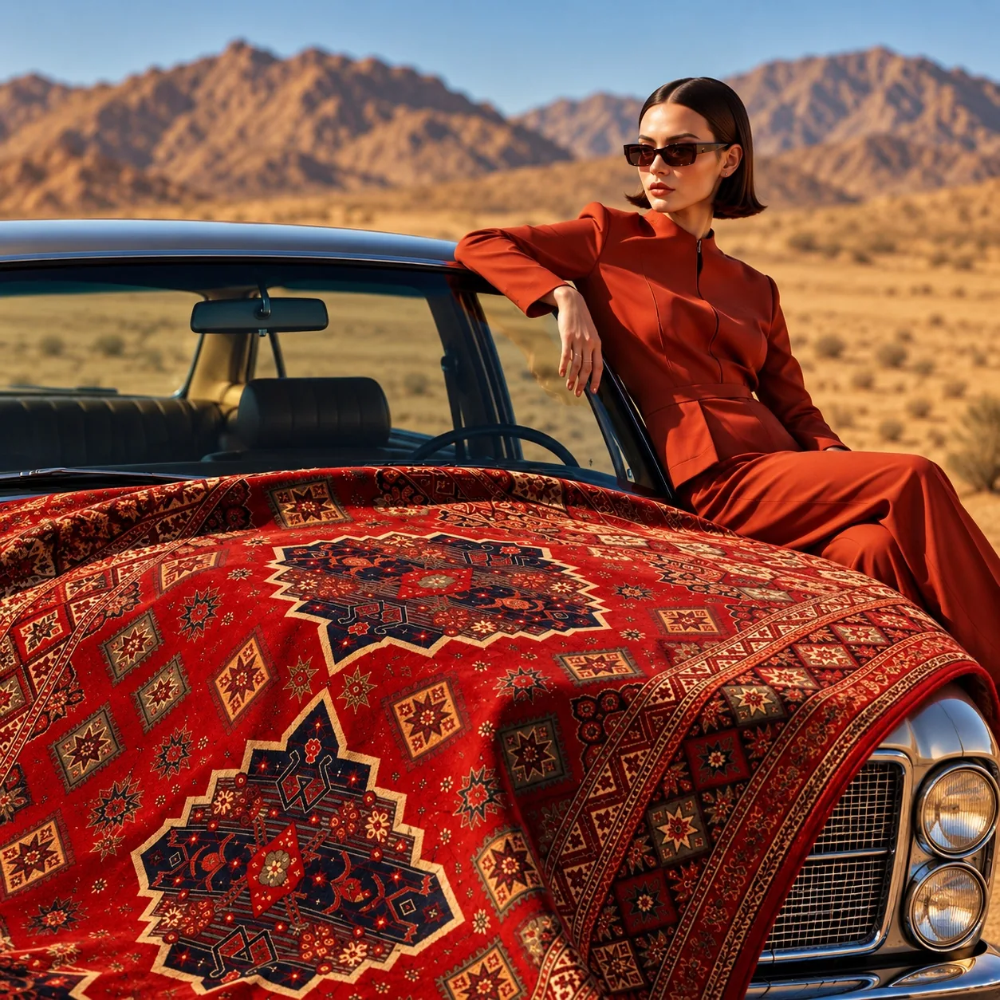
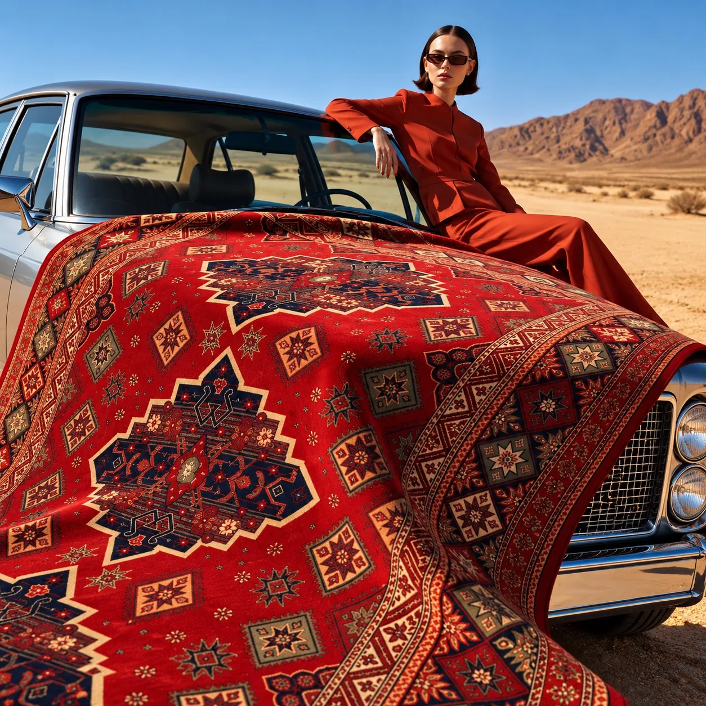
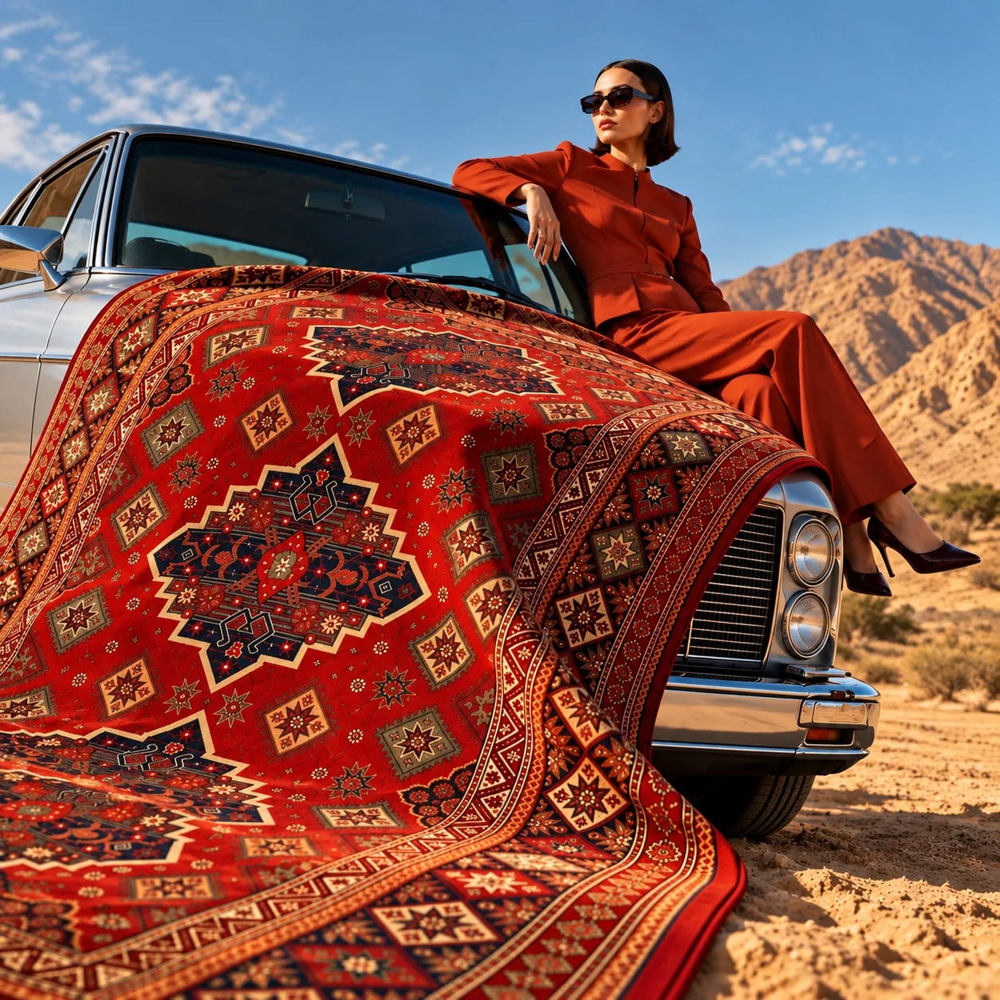

Halı / BAĞIMSIZ KONSEPT ÇALIŞMA
Desenin Yolculuğu
Kırmızı desenli bir halıyı çöl manzarası, klasik otomobil ve moda estetiğiyle buluşturan görsel hikâye.

PROJE FİLMİ
Desen, alışılmış sahnenin dışına çıkar.
Yaklaşık 15 saniyelik tanıtım videosu. Oynatma ve ses kontrolü sizde.
GÖRSEL SERİ
Aynı ürün, farklı bakışlar.



BİRLİKTE ÜRETELİM
Sizin ürününüz için nasıl bir hikâye kurabiliriz?
Bağımsız konsept çalışma · Marka iş birliği değildir.